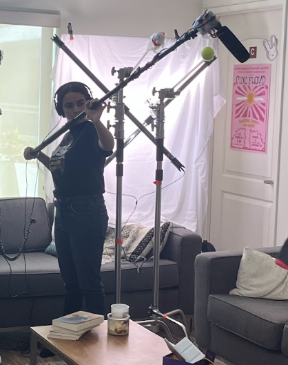

:quality(70)/cloudfront-us-east-1.images.arcpublishing.com/uscannenberg/BWHLMYORYVDV3CNPHJI5NDMXZM.JPG)
Writing

Motion & Graphic Design

Code

Multimedia Content Production

Live Broadcast & Film


The main tools I use to create graphics and motion graphics are Adobe Illustrator and After Effects, although I also have experience with Figma, Canva and Photoshop. More of my work can be accessed here.
For projects like the show intro, I gained experience brainstorming with colleages as clients to develop, design, and edit graphics based on their input
Projects I've worked on include published stories and elements for Annenberg Media's Interactives desk, hackathon projects, class assignments, and my own personal projects. The main tools I've used are HTML, CSS, React, and jQuery.
My main multimedia work includes recording and editing broadcast and radio stories and working as video editor of The Rundown. The main tools I use are Adobe Premiere, Audition and After Effects, although I have experience using Photoshop and photo editing software. I've worked to develop content for various platforms that require different voices and formats, such as news broadcast, social media, and blogs.
I've worked behind the scenes on multiple live broadcasts at USC, including Annenberg TV News, Annenberg Radio News and The Water Cooler. My work has included creating and running live motion graphics, collaborating with directors, producers and talent during live broadcast, researching ways to increase retention and engagement, editing video sports highlight reels, live chat question moderation, and the coordination and training of volunteers on OBS and broadcast equipment as Lead Livestream Manager

In the fall of my sophomore year I worked on the set of After Class, a student web series, as a Boom Operator. This included running wireless and boom microphone systems and collaborating with directors, crew and talent to capture dialogue in the highest quality possible.

As part of my major in applied analytics, I've used software such as mySQL, Tableau, Neo4j and MongoDB to analyze, manipulate and visualize large datasets. Examples include databases with dependencies between customer, product, vendor and purchase, between flights, cargo, crew, pilots, arrival times, passengers, distance and cost, as well as between movie, actor, director, genre, and user.
Below is an interactive data graphic I pitched, designed and coded to accompany a story about students weighing in on the campaign trail
Hover over the charts to learn more of the poll results!


:quality(70)/cloudfront-us-east-1.images.arcpublishing.com/uscannenberg/5PFK3NFLDZD6PESBIZX2ICOFCQ.jpeg)
:quality(70)/cloudfront-us-east-1.images.arcpublishing.com/uscannenberg/JNOXVH4HBNAV7CZEBBQ4MCLKKI.JPG)
:quality(70)/cloudfront-us-east-1.images.arcpublishing.com/uscannenberg/OVSJRLVN4VAVZO3P24BLGBQ5HQ.jpg)